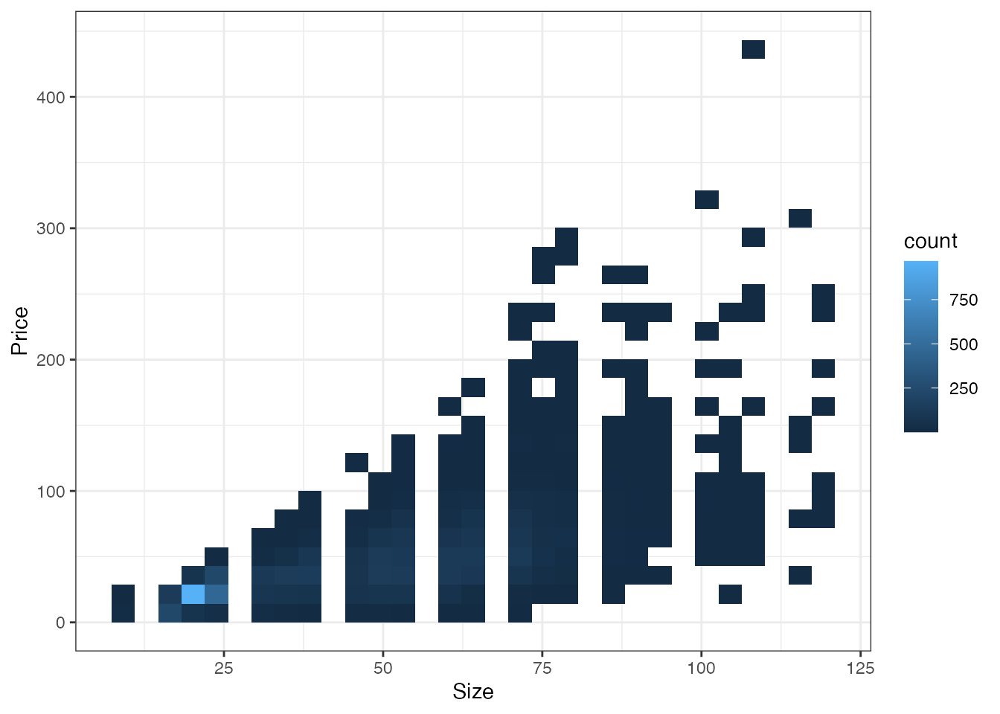
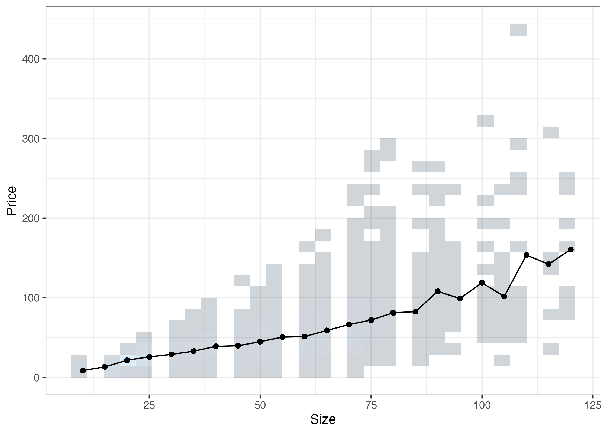

| Price | Size | TradeYear | LargeDistrict | Tenure |
|---|---|---|---|---|
| 200 | 105 | 2022 | 中心6区 | 31 |
1 要約の基本コンセプト
OLSやLASSOは、データが持つ特徴を要約するモデルを推定します。 要約は、データ分析における中核的アイディアであり、その重要性の理解が分析の第一歩となります。 本章では、要約の重要性を論じます。
1.1 観察できない変数が引き起こす問題
データから観察できない変数の存在は、あらゆる事例分析の最も深刻な問題の一つです。 このような変数への対処について、膨大な議論が蓄積されています。
観察できない変数がもたらす問題は、個別事例分析において特に顕著です。 以下では、取引価格(Price; 単位 \(=\) 100万円) \(=Y\) と物件の特徴 \(=X\) の関係性を把握するために、個別事例を丹念に見ていきます。 例えば、以下の2億円で取引されている物件が、データの中に含まれていました。
この事例から、部屋の広さが105平米で中心6区(港、中央、千代田、新宿、渋谷、文教)に立地する物件は、2億円で取引される傾向があったと結論づけても良いでしょうか？ ほとんどの応用でこのような推測は、不適切です。
同じデータの中に、取引価格以外全く同じ特徴を持つ物件の取引事例が、以下の3件ありました。 これらの事例と比較すると、2億円はかなり高い価格での取引だったことがわかります。
| Price | Size | TradeYear | LargeDistrict | Tenure |
|---|---|---|---|---|
| 200 | 105 | 2022 | 中心6区 | 31 |
| 150 | 105 | 2022 | 中心6区 | 33 |
| 92 | 105 | 2022 | 中心6区 | 21 |
| 110 | 105 | 2022 | 中心6区 | 30 |
なぜこのような取引価格のブレが生じるのでしょうか？ データの誤入力など潜在的な理由は複数ありますが、有力なのはこのデータに含まれない重要な変数 が存在することです。 例えば、最寄駅や公園の近くにあるか否かなど、より詳細な立地情報が考えられます。 あるいは売り手や買い手の”交渉力”を反映している可能性もあります。 このような多様な要因が、取引価格に影響を与え、結果として事例の下振れ/上振れが生じます。
観察できない変数は不動産のみならず、労働者や家計、企業、あるいは国レベルの分析でも同様の問題を引き起こします。 観察できる変数 \(X\) が一致した事例内でも、観察できない変数は事例間で大きく異なっている可能性が高く、結果 \(Y\) の値に大きな差が生まれます。 そして現実の社会や市場の複雑さを考慮すると、どれだけ詳細な調査を行ったとしても、\(Y\)に影響を与える全ての要因を観察することは困難です。
1.2 コンセプト: 集計
先の個別事例分析では、観察できない変数の偏りを確認する方法として、同じ\(X\)を持つ事例との整合性を確認しました。 このようなアプローチの発展として、同じ\(X\)を持つ事例集団について、\(Y\)の特徴を要約する方法があります。 例えば、平均値や分散、中央値、あるいは研究者による”所見”や”印象”、代表的な事例を紹介するなどです。
恣意的な分析を避けるためには、調査計画を立てる時点で、要約方法も決定し、分析を通じてコミットすることが望まれます。 代表的な値の候補としては、中央値や最頻値など多くの候補があります。 現状よく用いられるのは、平均値の活用です。
データ上の平均値
\[\frac{Y_1 + .. + Y_N}{N}\]
ただし \(Y_i\) は第\(i\)事例の値、 \(N\) は事例数を表す。
以下では、価格 (Price) と広さ (Size)について、データに含まれる事例の分布をHeat mapで図示しています。

上記の散布図は、社会分析に用いるデータの持つ典型的な特徴を表しています。 極めて乱雑であり、同じ\(X\) でも \(Y\) が異なる事例が多くなっています。 これは、観察できない変数の偏りが深刻である可能性を示唆しています。 また \(X\) の値に応じた事例数の偏りも顕著であり、特に100平米を超えるような物件の取引事例は少なくなっています。
以下の各点は、各\(X\)の組み合わせごとに計算されたデータ上の平均値を図示しています。

同図からは、\(Y\) と \(X\) のデータ上の関係性について、いくつか示唆を与えてます。 部屋が広くなると取引価格は高くなる傾向があります。
しかしながら多くの応用では、このような\(X\)ごとに集計するだけでは、不十分です。 本ノートでは、以下の少数事例の問題に注意が必要です。
1.3 少数事例の集計
平均値は有力な要約方法ですが、算出に使用する事例の数に注意してください。 Figure 1.1 では、特に100平米を超える物件について、事例が少なくなっています。 Chapter 2 では、仮に平均値を計算するとしても、事例数が少ないと、各事例の観察できない変数の偏りの影響を強く受ける可能性があります。 Chapter 3 と Chapter 5 では、このような小規模事例の集計問題を緩和するための手法として、OLSやLASSOを紹介します。